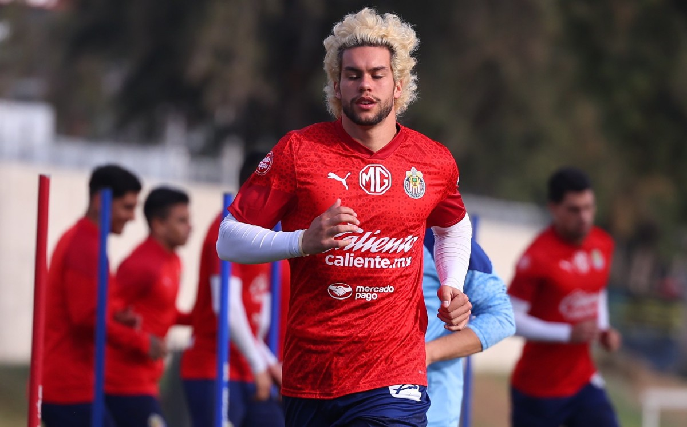
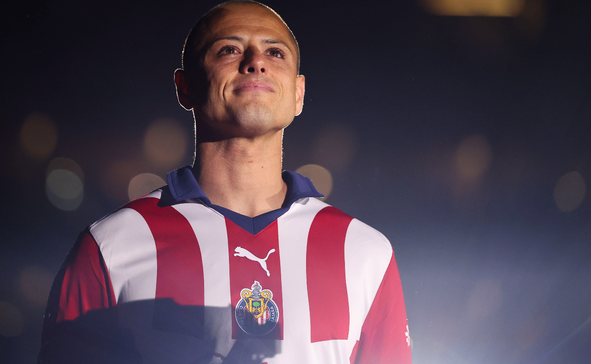

Cade Cowell es nuevo jugador del Club Deportivo Guadalajara
Chivas de Guadalajara realizó un controversial fichaje con el delantero Cade Cowell como refuerzo para el Clausura 2024 de la Liga MX y que cuenta con nacionalidad mexicana como estadounidense.
El jugador proveniente del San Jose Earthquakes de la MLS rompió concentración con la Selección de Estados Unidos el pasado jueves para finiquitar el acuerdo como nuevo jugador rojiblanco dentro del futbol mexicano.
Cowell se sumó así a José Castillo como refuerzo para el Clausura 2024 de la Liga MX, además de Brandon Tellez, éste proveniente del LA Galaxy II de Estados Unidos y quien fue anunciado por el Tapatío de la Liga de Expansión MX, pero con opción a ser tomado en el primer equipo del Rebaño.

Javier Hernández vuelve a Chivas en medio de lágrimas
Javier Hernández Balcázar regresa a Chivas después de 14 años, siendo recibido por más de 40 mil personas en el Estadio Akron. Su retorno se destaca por momentos emotivos, desde la firma del contrato con Amaury Vergara hasta las lágrimas compartidas con antiguos compañeros y mentores.
En un estadio lleno, Hernández es recibido con fuegos artificiales y cánticos de la multitud. Amaury Vergara lo elogia y le proyectan mensajes de figuras como José Luis Real, Alex Ferguson y Carlo Ancelotti. Las lágrimas fluyen cuando escucha palabras de su abuelo Tomás Balcázar y de sus padres.
En su discurso, Chicharito destaca el valor de Chivas al dar oportunidades a jugadores mexicanos y llama a la unidad de la afición. Pide apoyo para todo el equipo y expresa su amor por el club. El evento culmina con un llamado a la unión y el compromiso de dar lo mejor por Chivas.
